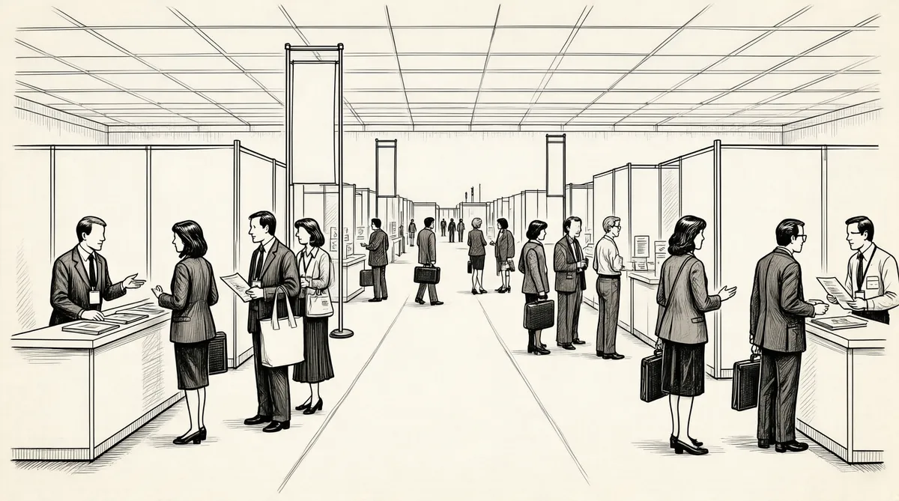

第45章 拖车政策

从“伊丽莎白二号”上下来，巴菲特开始给妻子苏珊讲故事，主题可能是B夫人的逸事，也可能是巴菲特自己杜撰的发生在很久之前的故事。从这一点上来看，股神和其他人没有什么区别。尽管那时苏珊已经和巴菲特分居，但两人的关系没有发生太大的变化，他们几乎每天都要通电话，苏珊更是把这部称作“热线”的电话安在了自己的公寓里。每次电话响起，苏珊都禁不住要跳起来。“那是沃伦的电话！”即便是与朋友在聊天，不管对方是谁，苏珊都会把巴菲特放在第一位，当然在巴菲特不需要苏珊的前提下，苏珊的所有时间还是属于自己的。
与巴菲特分居后，苏珊曾在纽约的格拉姆西塔附近找了一间不大的公寓作为住所，后来她又把住址搬到了位于华盛顿大街的有轨电车沿线，新住所可以看到附近海湾迷人的风景，更重要的是，这里离小儿子彼得的住所很近，彼得和他的妻子以及两个女儿就住在这里。那时的彼得依然在为自己的音乐梦想而奋斗，为了支付租房账单，他对外出租了音乐工作室，同时也开始为别人创作音乐——只要对方肯付钱，这些客户中有学生电影社团，还有一家叫“西部影音”的唱片公司。1
20世纪80年代初期对于苏珊来说是一段痛苦的日子，她先后失去了自己的双亲。1981年7月父亲汤普森博士离世，仅仅过了13个月，苏珊再次面临亲人离开的悲痛，母亲多萝西·汤普森也告别了这个世界。苏珊沉湎于失去父母的悲痛中不能自拔，她的心灵和生活都受到了巨大的打击，过了很长一段时间，这种情况依然没有丝毫改善的迹象，反而变得更加严重了。意识到了这些变化，巴菲特不再对苏珊的某些做法感到不理解了，他把苏珊的要求全都看作是理所应当的，这个他希望去保护、去呵护的女人已经把一部分注意力转移到了奢侈品消费上，而这些钱都是出自巴菲特的钱包。苏珊年轻的时候，最喜欢购买的是各种各样的祝福卡片，但是现在，苏珊更喜欢把钱花在那些知名品牌上，比如著名的皮鞋品牌波道夫。2波道夫每年推出的新款皮鞋成了苏珊的最爱，一向吝啬的巴菲特在这个问题上似乎开明了很多，因为一个近似于无情却又不争的事实是，巴菲特之所以能够掌管这么一大笔财富完全是因为苏珊的鼎力支持——无论什么时候，只要苏珊想用钱，不需要任何理由，她完全可以按照自己的意愿去花钱。面对两件皮草外套，苏珊不禁问道：“为什么我要选择买哪一件，非要给出一个答案呢？”而这个问题的答案很清楚，她根本不需要选择！
物质消费对于苏珊来说只是一方面，苏珊的资金更多的还是流向了她的朋友那里，她更多的时候还是为朋友们花钱。虽然苏珊的这些朋友肤色不同，都不富裕，但是朋友的数量却在不断增加，而且没有人愿意离开这位巴菲特夫人。彼得大学时代的女朋友也一度在苏珊身边工作，担任她的秘书，而且一做就是几年的时间，直到彼得与女友即将订婚，苏珊与准儿媳的合作才走向了终点。随着朋友数量的不断增加，家族规模的不断壮大，越来越多的朋友、家人，包括苏珊在旧金山的随行人员总是伴随在她的左右，要是换作一般人，早就被这样几乎没有个人空间的生活击垮了，但是苏珊并不是我们眼中的一般人，离开奥马哈后，拥有巨额财富的苏珊开始了自己的“魔幻”之旅，手中的金钱就像是魔法学徒手中的扫帚一样无所不能。圣诞节前，巴菲特问苏珊：“今年的圣诞节你需要多少钱？”苏珊的回答是7.5万美元。3听到这样一个答案，巴菲特很快就在支票簿上签了字。
在苏珊的若干朋友中，最能受到她贵宾礼遇的就是那些艺术家了，尤其是那些创作型的人才，那些苏珊认为潜能尚待开发以及天赋没有得到足够认可的人们，艾德华·莫尔达克就是其中之一。擅长当代油画的莫尔达克最喜欢运用明快的色彩进行创作，而这正是苏珊所欣赏的。但是在这些人中，有一个人却得到了苏珊特别的关照，他就是比利·罗杰斯，他既是苏珊的外甥，也是最能给苏珊制造麻烦的人。罗杰斯本人是一位爵士乐吉他手，才华横溢的他曾先后与不同的乐队、组合合作，也曾担任过美国蓝调传奇歌手B·B·金的伴奏，他的音乐生涯中最大的成就就是作为美国爵士乐团“十字军战士”的一分子，但是罗杰斯的音乐之路却毁于毒品。结婚后，罗杰斯育有一子，他把家安在了洛杉矶，之后几年他在美国西海岸着实找回了昔日的风光，但是在这个过程中，罗杰斯从来没有完全戒掉毒瘾，戒毒一段时间后的复吸只能使情况更加糟糕。但苏珊从来没有放弃他，在对待罗杰斯的问题上，她总是持乐观的态度，即便罗杰斯因为吸毒把自己搞得混乱不堪，苏珊对他的态度依然很坚定，因为在她眼中，罗杰斯就是自己的孩子。
1984年，艾滋病在美国已呈蔓延的趋势。在2000多名患者因此丧命、2000多人感染的情况下，苏珊决定投身到这场抗击艾滋病的战争中，她的重点就是那些旧金山的同性恋者，在当时艾滋病被称为“同性恋癌症”4。那时，人们对于艾滋病的认知还远没有达到现在的程度，对于艾滋病的传播方式也有很多误解，这样的大背景让人们对艾滋病的抵触情绪完全转移到了那些同性恋者身上。而这种抵触情绪不断上升，最后就演变成了近似于歇斯底里的反对，人们认为那些性取向有别于常人的同性恋者应该遭到上帝的惩罚。5就在这个时候，苏珊出现了，那些之前被家庭和朋友遗弃的同性恋者从苏珊那里得到了母亲般的温暖，巴菲特夫人再一次跨越了社会伦理的界限，在艾滋病成为一场灾难，行将爆发的初期，人们总是能看到这样一种景象，一个富家已婚女子频频出现在身患艾滋病的同性恋患者的身旁，俨然是他们的庇护者，而这个人就是苏珊·巴菲特。6
正因为如此，苏珊在旧金山的生活才变得非常紧张，这更需要一种平衡：在她与巴菲特分居的6年里（1977~1983），在公开场合，苏珊依然是沃伦·巴菲特的妻子，但是现在，苏珊却徘徊在离婚和再婚的门口踌躇不前。知道苏珊处境的人也许会认为苏珊为了取悦周围的人而继续选择待在这个犹如牢笼的婚姻城堡中。在他们看来，苏珊这样做就是为了麻痹自己，让自己不去想真正希望得到的是什么，他们认为苏珊是那种永远都不会把自己真正的心理需求说出来的人。但是当人们亲自看看苏珊过去的生活经历时，他们才知道这种臆想的猜测是错误的，苏珊是那种从来不会向任何人屈服的人，她可以把自己的精力分成几份，可以同时处理几种不同的人际关系。苏珊，完全有理由让人们相信她有能力处理好身边的人际关系，但她有时又把这种自信转化成了自负。在苏珊的生命中不仅仅有沃伦·巴菲特，还有一个男人。当越来越多的人知道苏珊这个秘密时，苏珊自己也很难说清楚，与身边的这两个男人到底是什么关系，事情似乎变得越来越难以控制，而且超出了她的控制范围。
1983年年底到1984年年初，苏珊和她的网球教练约翰·麦凯布一同前往欧洲旅行，旅行的过程中苏珊不仅结识了很多欧洲的朋友，也认识了很多来自奥马哈的同胞。一时间，苏珊的两种不同生活方式在美国产生了巨大的反响。1984年3月，苏珊返回奥巴哈参加巴菲特母亲利拉80岁寿辰的庆祝活动，其间，苏珊并没有向巴菲特隐瞒自己的情史，告诉沃伦自己离开奥马哈搬到旧金山居住和另外一个男人有关，但同时她也承认这不是离开的全部原因。听到这个消息，巴菲特意识到这段类似于婚外恋的故事似乎已经成为过去，巴菲特还感觉到苏珊所说的这个男人是在她离开奥马哈后认识的。7
即便苏珊向巴菲特坦承了自己的情感遭遇，她也是有所保留的，她没有把自己的秘密完全告诉这位股票巨人，但苏珊的心里已经很清楚，在巴菲特和自己的网球教练之间，她选择了前者。她永远不会离开巴菲特，两人的婚姻也将继续下去，她没有离婚的打算。
当巴菲特得知这一切的时候，他并没有难过得选择自杀，尽管看上去似乎他有些放弃人生的念头。这件事情对他的打击是巨大的，几乎在一夜之间，巴菲特就瘦了10磅。那段时间里，他需要承受太多的打击，其中就包括他知道苏珊把自己辛辛苦苦挣来的钱放心地交给另外一个人使用，要知道如果巴菲特预先清楚这件事的话，他是打死也不会同意的。也就是从这一天开始，巴菲特对位于加州拉古纳海滩的住所感到厌倦了，其实从一开始，他对这里就不是很有好感。
在母亲利拉的生日宴会上，巴菲特看起来很憔悴，但他给人的感觉还是与之前那些家庭聚会里的巴菲特别无二致。在家里，他与同居女友阿斯特丽德·门克斯的关系没有任何变化，后者并不知道巴菲特究竟出了什么事，而到了伯克希尔总部，巴菲特就把自己关在办公室里，用工作来麻痹自己。尽管自己对婚姻的全部幻想在这一刻成为泡影，但是巴菲特从来没有把这种想法告诉过任何人，他选择了把这一切埋在心里。
家事如此，巴菲特此时的事业同样麻烦不断，伯克希尔工厂维持下去的希望变得越来越渺茫。尽管工厂里的细纱机并没有停止转动，但这仍然无法掩盖工厂败落的事实。老式织布机像是一堆废铜烂铁拼凑起来的古董，缝纫机工作时发出的声音更像是一辆在纺纱间行驶缓慢的火车。当时工厂里只剩下了400多名工人，他们中的相当一部分人都是葡萄牙人的后裔，尽管专业技术优秀，但是他们年纪偏大，很多人都已经五六十岁，而且他们的英语也讲得很差，再加上长期在嘈杂的纺织车间工作，很多人的听力都受到了不同程度的影响。当时的情况是，如果巴菲特不去购买新的细纱机和纺织机等设备，工厂连一锭纱也生产不出来，其结果也就可想而知了。1985年巴菲特关闭了伯克希尔工厂。8如果更换新设备，工厂大约要掏出5000万美元的资金，而巴菲特最终还是选择拍卖那些老设备，不过拍卖款总额只有163122美元。9
工人们对巴菲特做出这样的决定也感到十分不解，他们希望在合同解除后得到相应的赔偿金，但是工人们得到的补偿只是几个月的工资。他们希望面对面地与巴菲特做个了断，但是却被后者拒绝了，工人们认为老板这样的做法很无情，但又能怎么样呢？也许巴菲特根本没有见这些员工的勇气。
当然，这不是工人们的错，当新机器出现的时候，工人们只能是任人宰割的羔羊，是自由市场改变了他们的身份。如果你已经55岁了，而且不会英文，只会讲葡萄牙语，你又能怎么样？在纺纱车间工作了30年，你的听力已经不能和常人相比了，所以你只能接受被淘汰的命运。也许有人说可以把这些工人送去培训，让他们接受培训后再回来就业，但是别忘了他们的背景，有些人学学初中的课程就能成为一名电脑维修师，但我们的工人不是这样！
我们的工厂放弃他们，并不意味着他们将因此失业，自由市场可以帮助他们重新找到就业的机会，他们也给这个社会带来了很多积极的东西，只是我们需要一个完整的保障体系，归根结底，还是社会得到的利益最多，但同时社会也应该为出现的问题负责！
尽管当时的社会保障体系还不健全，但巴菲特并没有为这样的社会现实收拾烂摊子的意思。不管工人们得到的补偿金有多少，巴菲特认为那些都是工人们应得的。“市场并不完善，你绝不能指望这个社会能给你一份很体面的工作！”
由于巴菲特最终选择关闭工厂，纺织业也成了伯克希尔–哈撒韦成立初期资本积累过程中不堪回首的往事。根据巴菲特的规划，他认为保险业可以推动伯克希尔–哈撒韦未来的发展。在20世纪70年代，巴菲特把若干个小保险公司整合起来，新公司也因此成为了国民赔偿公司的一个重要支柱。这个决定在当时曾被人称道，但若干年后，公司的发展方向却被认为远远偏离了正轨，这样的发展策略也被认为是错误的。
之后，巴菲特身边发生了很多事情：最开始，巴菲特的好友杰克·林沃尔特选择退休，之后国民赔偿公司发生了诈骗事件，特别是后者带给公司的影响是巨大的，经济损失超过了1000万美元。尽管公司也在诈骗案发生后追回了部分损失，但是这些只是保险公司所有问题的开始。20世纪70年代初期，巴菲特购买了不少的家庭保险公司和自主保险公司，但是这些收购并不成功，最后，这些公司不得不由其他人来接手。尽管如此，这也几乎成了巴菲特所有保险公司的发展模式，也就是我们在这章标题中提到的“拖车政策”，先让这些公司陷入困境，然后求助于拖车，也就是让第三方来帮助脱离困境。这就像利用绞车从泥沼中拖出笨重的物体一样。除此之外，伯克希尔还和加州的工伤保险扯上了关系，这是一个涉及工人在出现工伤后有关工资和医疗、健康状况的赔付险种。而截至1977年，伯克希尔旗下的两家公司有一个已经陷入了巨大的“灾难”之中，公司的经理人总是从代理商那里捞回扣。10为了解决这个问题，巴菲特派出了丹·格罗斯曼赶往洛杉矶处理相关事宜。到了洛杉矶后不久，格罗斯曼发现自己对于保险行业简直就是一窍不通，他终于明白这是一项非常复杂的行业，远远超出了其所有的字面含义。（在这里我们举一个例子，维恩·麦肯齐，就亲自出差去保险经纪人那里收回了一处住宅和一部轿车。11）也许在一般的行业中，让公司的管理人员去处理这些事并不符合传统首席执行官们的逻辑，但是对于巴菲特和他的伯克希尔来说，没有什么是不可能的，毕竟对于一个精明的人来说，没有不可能完成的任务。这时，格罗斯曼面对的是一个支离破碎的公司，为了解决出现的种种问题，格罗斯曼采取了“拖车政策”，他找来了极富经验的经理人弗兰克·德纳罗。事实证明，德纳罗把问题处理得很好，在伯克希尔的年度报告中，巴菲特还点名对德纳罗提出了表扬。
随后，巴菲特为了增加再保险行业中的经验值，还涉足了再保险险种，这是一家保险公司为其他保险公司提供保险服务的业务。在这项新业务中，巴菲特聘请了乔治·扬作为主管。扬非常绅士，而且业务素养很高，对于新工作，他显得非常容易上手，公司因此取得了良好的效益，但同样也不可避免地出现了损失。巴菲特曾试图与扬一起解决出现的问题，格罗斯曼也因此被派到了纽约。事后，格罗斯曼回忆起当时的情况说道：“真的太乱了，当时一切都是一个非常模糊的概念，巴菲特让我去和伦敦劳合社谈，让我尽可能发掘再保险的业务。”不过格罗斯曼也意识到再保险是一项属于专业人员才能完成的任务，于是他找来了鲁安和切尼夫帮忙，自己则把更多的精力放在了投资管理的学习上。
巴菲特的一生是充满冒险精神的，除了再保险这个行业，他开发的另外一个实验性产业就是Homestate保险公司。Homestate保险公司的性质与其他公司的性质不同，它的子公司分布在美国境内的各个州。在通常情况下，被保险人更愿意和挂着“公司总裁”头衔的人直接接触。与那些“保险经理”相比，“总裁”往往更能提高客户的满意度。但是在1978年，以此为特色的Homestate保险公司，业绩并不十分出色，巴菲特用了“令人失望”这样的字眼来描述这一切。他发现尽管人们愿意同公司总裁直接沟通，但是那些国有保险公司却在经营管理等方面占据优势，这也就意味着Homestate保险公司需要一种全新的管理体系来改变这一切。巴菲特自己也没有找到解决问题的方法，他那种“孤注一掷、抬高价格”的标准投资技巧没有为保险方面带来巨额利润。最终，还是巴菲特的好友汤姆·墨菲的建议为巴菲特打开了局面，他告诉巴菲特要起用那些“有头脑、有社会经验的人员”。12这样维恩·麦肯齐再次出现在巴菲特的视线里，这一次，巴菲特委派麦肯齐出任Homestate保险公司分公司的经理，不过麦肯齐对保险业也不精通，他也不得不离开。13而就在这时，德纳罗因心脏病突发去世，这对巴菲特更是一个致命打击。当时，德纳罗还只有37岁，在这种情况下，加州的工伤保险业务再次陷入了混乱之中，巴菲特不得不把格罗斯曼从纽约重召回来继续管理这边的事务。
这样，26岁的格罗斯曼成为了Homestate保险公司的主管。在保险行业中，防止出现欺诈保险比保险销售更为重要。而格罗斯曼则发现那些已经投保几十年的老顾客却在骗取保险金，而且他们这么做已有数十年了。为此，格罗斯曼向巴菲特发出了求救信号，他希望得到巴菲特的帮助，但巴菲特并没有给出任何有效的解决方案，年轻的格罗斯曼只能靠自己来处理这些棘手的事情。尽管格罗斯曼在自己的这份事业上付出了很多的时间和精力，但是他依然感觉力不从心，甚至觉得以他当时的经验和阅历根本不能处理保险行业中产生的种种问题。“这项业务本身已经超出了自己的能力。”格罗斯曼这样解释道。再看看巴菲特方面，虽然他一再表示对格罗斯曼有信心，认为他能处理好出现的所有问题，但恰恰就是这种压力让格罗斯曼透不过气来，他的婚姻也因此亮起了红灯，最终，格罗斯曼选择离开，他告诉巴菲特自己根本无法应付出现的问题。之后，格罗斯曼就举家搬到了旧金山湾附近，在那里开始了自己的投资经营。14
以巴菲特的性格，他最不希望看到的就是员工的离开，因此他多次挽留格罗斯曼，希望格罗斯曼能继续在伯克希尔任职，但都被谢绝了。辞职前，格罗斯曼的人缘很不错，他与同事之间的感情很好，所以公司里有很多人希望格罗斯曼留下，但这种奢望最终还是落了空。在格罗斯曼自己看来，他认为自己并不能轻松地承受伯克希尔内部的种种压力，他认为在公司纵横交错的关系网中——一方面，苏珊的崇拜者大多都是出于对巴菲特的尊重，而另一方面，巴菲特在公司内部有属于自己的坚定支持者，格罗斯曼很难找到属于自己的自由。离开伯克希尔，离开巴菲特，格罗斯曼已经充分认识到自己将失去什么，所以在走的时候，格罗斯曼切断了与伯克希尔所有可能的联系。这一切，用巴菲特某位老朋友的话说，就是“格罗斯曼抛弃了巴菲特和他的公司，他选择与巴菲特分离”，作为巴菲特的老友，他不能说什么，尽管他明白事情的来龙去脉，但是表面上他只能表现出对格罗斯曼离开伯克希尔的遗憾。
随着格罗斯曼的退出，伯克希尔内部支持发展保险业的派系又少了一个同盟者，麦肯齐也因此变得更加忙碌，他绝大多数的时间都在想如何把内布拉斯加家具城整合到巴菲特的公司里。在格罗斯曼离开的这段时间里，巴菲特邀请了迈克·戈德伯格，这位麦肯锡的前顾问官、曾和里克肖塞尔一起在太平洋海岸股票交易所工作的专业人员，暂时代理格罗斯曼的工作。出生在布鲁克林区的戈德伯格是一个很严谨的人，但又不失幽默的本色，而且这个人似乎就是为保险而生的，血渍里充满了保险业的DNA。戈德伯格对于保险业完全是自学成才，他的业绩也相当不错——这多少和巴菲特有些关系，这位股市大亨是绝对不会花钱请人来教戈德伯格的（其实对谁也都是一样），一位老师都不会请，更不要说两位了。
随着戈德伯格的到来，伯克希尔内部原来的那种谦和、中规中矩的美国中西部行事作风几乎彻底被改变了。凡是他认定不合格的经理人迅速被扫地出门了。随着大量经理被辞退的消息不胫而走，戈德伯格赢得了令人生畏的名声。在工伤保险业务和再保险业务两大部门中，戈德伯格招了些新人，有人顶住压力留了下来，有人受不了这里的高压环境而选择离开，还有的没合格被淘汰了。
戈德伯格能够在短期内取得成绩，难怪有人会对他的工作方法感到好奇，但是他的工作方法其实很简单，就是不断地给公司经理人打电话，然后和他们充分地深入交谈，以了解经理人对工作的态度并指出他们应如何正确地思考业务。在一片混沌中，他事必躬亲的做派非常难得，一位曾经在戈德伯格手下担任公司经理人的雇员表示，在这种环境下工作，能承受得了这种压力的人可以从戈德伯格身上学到很多。其实戈德伯格就是这样一个人，他的雇员表示，戈德伯格“就连叫到一部出租车都会兴奋得叫起来”！
20世纪80年代早期，戈德伯格逆流而上，使公司朝正确的航向前进。不同于令人失望的霍克希尔德–科恩公司与伯克希尔——从一开始，巴菲特也许就不应该收购这些公司。对于戈德伯格，巴菲特一向都是非常信任的，他相信戈德伯格所做的一切对于公司来说都是非常必要的。但是，待人友善、心无城府的乔治·扬在负责再保险部门工作时，却被一些不择手段的经纪人所利用。坦率地说，这种现象在当时的保险业是非常普遍的。15不过这也让巴菲特认清了现实，他也改变了自己的行事作风：尽量避免裁员带来的冲突，对公司经理人的批评采用迂回间接的方式，针对他们的褒奖有所保留。随着资产数量和规模的不断扩大，巴菲特也能更加娴熟地掌控这一切了。要解析股东的信件以获得有关保险公司的信息，你要像神探福尔摩斯一样细致入微，要像夜晚的狗一样注意不寻常的事件——而这样的狗不叫。16此前近10年时间里，人们总是能听到巴菲特对身边经理人的赞美声，而现在人们从巴菲特嘴里听到这种赞美的机会越来越少，为数不多的几次是他对GEICO以及国民赔偿公司的赞美，这两家公司之所以能得到巴菲特的认同，很大程度上是因为自身的业绩非常突出。
尽管巴菲特非常吝惜自己的赞美之词，但是他从来没有中断通过书信表达对保险业的关注，特别是在1984年，他在这一年写给股东们的信件中，有关保险业的话题所占的篇幅比以往任何时候都要多。巴菲特将伯克希尔保险公司合并成了一个庞大的体系，面对伯克希尔业绩不景气的局面，巴菲特没有将责任推给某一位经理人或者是某一家分公司，而是把责任统统揽到了自己身上。即便那些经理人及公司是应该为伯克希尔糟糕的业绩负责的，巴菲特也没有选择那么做。他用了长达7页的篇幅来描述当时保险业的状况，“循规蹈矩”般的营销模式，再加上公司出现的损失，让巴菲特的内心十分尴尬。尽管对于巴菲特这位伯克希尔的首席执行官来说，勇于为公司出现的状况承担批评与指责是一件再正常不过的事，但是在很多人看来，他是在通过自责来堵住外界对他的抨击。
虽然巴菲特知道，在那些可怕数据的背后，实质性的改善已经发生，但他还是在信中披露了种种问题。到了1985年，从事保险行业的人员开始沿着巴菲特构建的轨道前进，这促进了现金流的增加，这笔资金也可以说是巴菲特今后事业成功的经济动力源。
巴菲特所描述的保险业的发展模式在1985年开始爆发出它的潜力，这种发展模式与之前任何产业的发展模式都不相同，但就是这种独一无二的前进路线为巴菲特保险公司的发展注入了巨大的前进动力，抑或是前进的合力，从而使公司的股东们得到了良好的投资回报。
接下来巴菲特将表演时间交给了戈德伯格，后者的推动将伯克希尔–哈撒韦旗下的保险产业发展到了最高峰，从此，伯克希尔的收益呈几何级数上升，甚至超过了井喷的速度。
有一天，巴菲特说了这样一句话：“我在某一个周六来到这里，迈克·戈德伯格和阿吉特·贾殷正在散步。”
阿吉特·贾殷的身份是巴菲特的高级助理，于1951年出生，在位于印度克勒格布尔的著名学府——印度理工学院修完了工程学位，之后在IBM驻印度分部就职3年，这之后阿吉特继续了自己的学业，并拿到了哈佛大学的经济学学位。与巴菲特和芒格一样，阿吉特天生就是一个怀疑论者、一个精明的人，没有什么人能够说服他，这一点恰恰是巴菲特所欣赏的地方。很快，后者就进入了巴菲特完成收购B夫人家具城后重组的管理层。巴菲特认为他们俩有着太多的相似。
他（阿吉特）在保险业没有任何背景，但我就是喜欢这个人，我想我和他之间有着太多的共性，你可以对那个和我一起讨论工作的阿吉特表示质疑，但是我们之间摩擦出的那种电光火石般的力量是巨大的，和我们在伯克希尔做的任何一件事相比，没有哪种力量能超过我和阿吉特共事的力量！
提到阿吉特在伯克希尔所作的决策，巴菲特表示自己并没有在阿吉特作决策的过程中给出任何自己的意见或者建议，但巴菲特在电话会议中并不是单纯地扮演倾听者这一被动角色，如果在电话会议中出现了巴菲特热衷的活动或是工作，那么将这份工作接下来的那个人肯定是阿吉特。巴菲特喜欢需要绞尽脑汁的工作和那些艰难的谈判——谈判的过程就是这样，成功与否常常取决于当事人的性格，一个人的智慧与能力很可能决定一桩买卖能否达成。在这个高度强调理性与智慧的行业里，只要参与谈判的人选正确，只要他能在适当的时候发挥正常，那么他所能爆发出的能量将是惊人的。巴菲特在工作中通过阿吉特“暗度陈仓”的方法表明，前者是很倾向于“暗中交易”的方式的，事实证明的确如此。
随着巴菲特与阿吉特的关系越来越近，以及伯克希尔里出现的种种问题逐渐得到解决，戈德伯格也算完成了自己的任务，此后不久，他就将工作重心转移到为伯克希尔创建信贷和地产业务上去了。
身为巴菲特高级助理的阿吉特是一个什么样的人物呢？他平时的睡眠很少，每天早晨大概在五六点左右醒来，而他醒来的第一件事就是问：“这个时间谁睡醒了？我能和谁打电话聊一聊公司的发展？”所以阿吉特的同事必须在周末清晨作好随时被电话吵醒的准备，而且电话总是会很长，内容无外乎再保险业务。而阿吉特与巴菲特的通话时间则定在了每天晚上10点，不管阿吉特在哪里，晚间10点的电话他们从来没有中断过。
事实上，阿吉特加盟伯克希尔选在了一个无比恰当的时间，当时保险价格正处在顶峰，巴菲特在1985年的《行业保险》杂志上刊登了一条惊人的广告——“我们在寻找保费超过百万的客户！”这则广告融合了巴菲特的两大特点：张扬的表现力与深邃的思考力。尽管如巴菲特自己所说：“我们没有名气，也没有人给我们分配客户！”但广告的力量是巨大的，在这则极具巴菲特个人特点的广告刊登后，保险单一张接着一张，阿吉特的生意也是一个接着一个。17